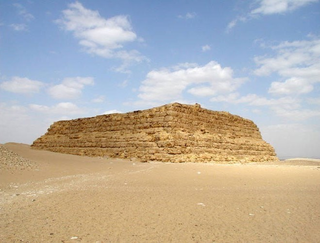

Architecture
Sun-dried bricks, which were common to Mesopotamia, and architecture that included decorative elements (arches and recessed walls as well as decorations themselves) were adopted into Egypt. With the ruling class more established came more involved funeral rituals. Ancient Egyptians are renowned for their elaborate funeral practices for rulers.
This is where things like the Step pyramid, which is a structure that uses a series of flat platforms, and the mastaba, Egyptian tombs, began to be used more often for Egypt's elite class.